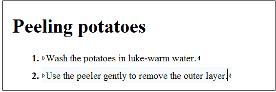

DITA 1.3 Key Scopes - Next Generation of Reuse
Thanks to the hard working OASIS DITA TC Group the DITA 1.3 standard is quite close to being released. Oxygen 17.1 which will be released probably in September this year will have experimental DITA 1.3 support. This will include publishing using a custom build of the latest DITA Open Toolkit 2.x engine in which the main developer Jarno Elovirta has already added incipient support for key scopes and branch filtering.
In this blog post I'm going to give you a small example of how key scopes can benefit simple cases of reuse which could not be done previously.
Let's say you have a simple DITA task in which you have described how a certain task can be performed for a certain product. In our case, the task describes peeling a potato:
<ph keyref="vegetable"/>
<topicref href="potatoes_overview.dita" keyscope="potatoes"> <!-- Define the vegetable key value in this key scope --> <keydef keys="vegetable"> <topicmeta> <keywords> <keyword>potatoes</keyword> </keywords> </topicmeta> </keydef> <!-- Reference to the common task --> <topicref href="peeling.dita"/> </topicref>and add in our DITA Map another key scope with the overview and the task which deal with cucumbers peeling:
<topicref href="cucumbers_overview.dita" keyscope="cucumbers"> <!-- Define the vegetable key value in this key scope --> <keydef keys="vegetable"> <topicmeta> <keywords> <keyword>cucumbers</keyword> </keywords> </topicmeta> </keydef> <!-- Reference to the common task --> <topicref href="peeling.dita"/> </topicref>
<topicref href="vegetables_over.dita"/>and this overview topic can refer to each product name using the full keyscope key reference value:
<!DOCTYPE topic PUBLIC "-//OASIS//DTD DITA Topic//EN" "topic.dtd"> <topic id="vegetables_over"> <title>Vegetables Overview</title> <body> <p>This is an overview of all vegetables necessary to make soup. You will learn how to use vegetables like <ph keyref="potatoes.vegetable"/> and <ph keyref="cucumbers.vegetable"/> to make a great starter soup.</p> </body> </topic>
As stated before, this kind of reuse was not possible using the standard DITA 1.2 standard constructs. As it turns out, with DITA 1.3 we can also implement this kind of reuse using branch filtering. The DITA samples for this post can be downloaded from https://www.oxygenxml.com/forum/files/keyscopesBlogSamples.zip.
As usual any feedback is welcomed.
If you would like to beta test Oxygen XML Editor 17.1 with experimental DITA 1.3 support please contact us to support@oxygenxml.com.